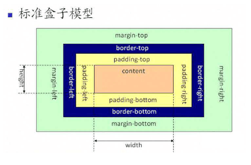

1.正常盒子与怪异盒子对比(box-sizing)
这是正常的盒子，宽度400px，高100px,内边距20培训，边框5px。
这是怪异的盒子，宽度400px，高100px,内边距20培训，边框5px。(border-box)


2.垂直分栏(column)
说道“盒子”我还记得好几年之前，我还在上大学的时候，被人问道过“盒子模型”，我当时都不知道什么意思。 回到宿舍急忙上网去查，原来就是我早就知道的margin，padding和border，但是我竟然不知道“盒子”这个词。 ——所以，不要只满足于网上查来的代码段、小技巧，要全面的了解一些知识体系。 当然，后来我又知道，盒子模型不仅仅是margin，padding和border，还有其他的知识。 在此插一句题外话，也是我这几天思考的一点东西。我在思考：web前端的这么知识应该是怎样的一个知识体系架构？
之前我以为可以以W3C为纲要，把W3C的东西学会了就够了。后来发现我错了，W3C还不全面。 真正全面的覆盖了web前端知识体系的东西是——浏览器内核——这并不是说让你去详细了解浏览器内核、做出一个浏览器。浏览器是web前端代码运行的一个平台，浏览器内核里有哪些模块，我们就需要去学习哪些东西。详细的先不说，以后有机会再分享。这里照顾一下初学者。初学css的朋友，一开始学css基础知识的时候一定学过padding，border和margin，即内边距、边框、外边距。他们三者就构成了一个“盒子”。就像我们收到的快递，本来买了一个小小的iphone，收到的确实那么大一个盒子。因为iphone白色的包装盒和iphone机器之间有间隔层（内边距），iphone白色盒子有厚度，虽然很薄（边框），盒子和快递箱子之间还有一层泡沫板（外边距）。这就是一个典型的盒子。
3.弹性盒子垂直分栏(-webkit-flex-direction: row;)
第一个盒子
第二个盒子
第三个盒子
4.弹性盒子水平分栏(-webkit-flex-direction: column;)
第一个盒子
第二个盒子
第三个盒子